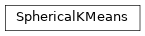

spsklearn.cluster._spherical_k_means¶
Spherical K-means clustering.
Module Contents¶
Classes¶
Spherical K-Means clustering. |
Functions¶
|
Init n_clusters seeds according to spherical k-means++. |
|
Perform K-means clustering algorithm. |
-
spsklearn.cluster._spherical_k_means.spherical_k_means_plusplus(X, n_clusters, *, sample_weight=None, random_state=None, n_local_trials=None)[source]¶ Init n_clusters seeds according to spherical k-means++.
- Parameters
X ({array-like, sparse matrix} of shape (n_samples, n_features)) – The data to pick seeds from.
n_clusters (int) – The number of centroids to initialize.
sample_weight (array-like of shape (n_samples,), default=None) – The weights for each observation in X. If None, all observations are assigned equal weight. sample_weight is ignored if init is a callable or a user provided array.
random_state (int or RandomState instance, default=None) – Determines random number generation for centroid initialization. Pass an int for reproducible output across multiple function calls. See Glossary.
n_local_trials (int, default=None) – The number of seeding trials for each center (except the first), of which the one reducing inertia the most is greedily chosen. Set to None to make the number of trials depend logarithmically on the number of seeds (2+log(k)) which is the recommended setting. Setting to 1 disables the greedy cluster selection and recovers the vanilla k-means++ algorithm which was empirically shown to work less well than its greedy variant.
- Returns
centers (ndarray of shape (n_clusters, n_features)) – The initial centers for k-means.
indices (ndarray of shape (n_clusters,)) – The index location of the chosen centers in the data array X. For a given index and center, X[index] = center.
Notes
Selects initial cluster centers for spherical k-mean clustering in a smart way to speed up convergence. see: Arthur, D. and Vassilvitskii, S. “k-means++: the advantages of careful seeding”. ACM-SIAM symposium on Discrete algorithms. 2007
-
spsklearn.cluster._spherical_k_means.spherical_k_means(X, n_clusters, *, sample_weight=None, init='spherical-k-means++', n_init='auto', max_iter=300, verbose=False, tol=0.0001, random_state=None, copy_x=True, algorithm='lloyd', return_n_iter=False)[source]¶ Perform K-means clustering algorithm.
Read more in the User Guide.
- Parameters
X ({array-like, sparse matrix} of shape (n_samples, n_features)) – The observations to cluster. It must be noted that the data will be converted to C ordering, which will cause a memory copy if the given data is not C-contiguous.
n_clusters (int) – The number of clusters to form as well as the number of centroids to generate.
sample_weight (array-like of shape (n_samples,), default=None) – The weights for each observation in X. If None, all observations are assigned equal weight. sample_weight is not used during initialization if init is a callable or a user provided array.
init ({'spherical-k-means++', 'random'}, callable or array-like of shape (n_clusters, n_features), default='spherical-k-means++') –
Method for initialization:
’spherical-k-means++’ : selects initial cluster centers for k-mean clustering in a smart way to speed up convergence. See section Notes in k_init for more details.
’random’: choose n_clusters observations (rows) at random from data for the initial centroids.
If an array is passed, it should be of shape (n_clusters, n_features) and gives the initial centers.
If a callable is passed, it should take arguments X, n_clusters and a random state and return an initialization.
n_init ('auto' or int, default="auto") –
Number of time the k-means algorithm will be run with different centroid seeds. The final results will be the best output of n_init consecutive runs in terms of inertia.
When n_init=’auto’, the number of runs depends on the value of init: 10 if using init=’random’ or init is a callable; 1 if using init=’spherical-k-means++’ or init is an array-like.
New in version 1.2: Added ‘auto’ option for n_init.
Changed in version 1.4: Default value for n_init changed to ‘auto’.
max_iter (int, default=300) – Maximum number of iterations of the k-means algorithm to run.
verbose (bool, default=False) – Verbosity mode.
tol (float, default=1e-4) – Relative tolerance with regards to Frobenius norm of the difference in the cluster centers of two consecutive iterations to declare convergence.
random_state (int, RandomState instance or None, default=None) – Determines random number generation for centroid initialization. Use an int to make the randomness deterministic. See Glossary.
copy_x (bool, default=True) – When pre-computing distances it is more numerically accurate to center the data first. If copy_x is True (default), then the original data is not modified. If False, the original data is modified, and put back before the function returns, but small numerical differences may be introduced by subtracting and then adding the data mean. Note that if the original data is not C-contiguous, a copy will be made even if copy_x is False. If the original data is sparse, but not in CSR format, a copy will be made even if copy_x is False.
algorithm ({"lloyd"}, default="lloyd") – K-means algorithm to use. The classical EM-style algorithm is “lloyd”. The “elkan” variation can be more efficient on some datasets with well-defined clusters, by using the triangle inequality. However it’s more memory intensive due to the allocation of an extra array of shape (n_samples, n_clusters).
return_n_iter (bool, default=False) – Whether or not to return the number of iterations.
- Returns
centroid (ndarray of shape (n_clusters, n_features)) – Centroids found at the last iteration of k-means.
label (ndarray of shape (n_samples,)) – The label[i] is the code or index of the centroid the i’th observation is closest to.
inertia (float) – The final value of the inertia criterion (sum of squared distances to the closest centroid for all observations in the training set).
best_n_iter (int) – Number of iterations corresponding to the best results. Returned only if return_n_iter is set to True.
Examples
>>> import numpy as np >>> from sklearn.cluster import k_means >>> X = np.array([[1, 2], [1, 4], [1, 0], ... [10, 2], [10, 4], [10, 0]]) >>> centroid, label, inertia = k_means( ... X, n_clusters=2, n_init="auto", random_state=0 ... ) >>> centroid array([[10., 2.], [ 1., 2.]]) >>> label array([1, 1, 1, 0, 0, 0], dtype=int32) >>> inertia 16.0
-
class
spsklearn.cluster._spherical_k_means.SphericalKMeans(n_clusters=8, *, init='spherical-k-means++', n_init='auto', max_iter=300, tol=0.0001, verbose=0, random_state=None, copy_x=True, algorithm='lloyd')[source]¶ Bases:
sklearn.cluster._kmeans._BaseKMeansSpherical K-Means clustering.
- Parameters
n_clusters (int, default=8) – The number of clusters to form as well as the number of centroids to generate.
init ({'spherical-k-means++', 'random'}, callable or array-like of shape (n_clusters, n_features), default='spherical-k-means++') –
Method for initialization:
’spherical-k-means++’ : selects initial cluster centroids using sampling based on an empirical probability distribution of the points’ contribution to the overall inertia. This technique speeds up convergence. The algorithm implemented is “greedy spherical-k-means++”. It differs from the vanilla spherical-k-means++ by making several trials at each sampling step and choosing the best centroid among them.
’random’: choose n_clusters observations (rows) at random from data for the initial centroids.
If an array is passed, it should be of shape (n_clusters, n_features) and gives the initial centers.
If a callable is passed, it should take arguments X, n_clusters and a random state and return an initialization.
For an example of how to use the different init strategy, see the example entitled sphx_glr_auto_examples_cluster_plot_kmeans_digits.py.
n_init ('auto' or int, default='auto') –
Number of times the k-means algorithm is run with different centroid seeds. The final results is the best output of n_init consecutive runs in terms of inertia. Several runs are recommended for sparse high-dimensional problems (see kmeans_sparse_high_dim).
When n_init=’auto’, the number of runs depends on the value of init: 10 if using init=’random’ or init is a callable; 1 if using init=’spherical-k-means++’ or init is an array-like.
max_iter (int, default=300) – Maximum number of iterations of the k-means algorithm for a single run.
tol (float, default=1e-4) – Relative tolerance with regards to Frobenius norm of the difference in the cluster centers of two consecutive iterations to declare convergence.
verbose (int, default=0) – Verbosity mode.
random_state (int, RandomState instance or None, default=None) – Determines random number generation for centroid initialization. Use an int to make the randomness deterministic. See Glossary.
copy_x (bool, default=True) – When pre-computing distances it is more numerically accurate to center the data first. If copy_x is True (default), then the original data is not modified. If False, the original data is modified, and put back before the function returns, but small numerical differences may be introduced by subtracting and then adding the data mean. Note that if the original data is not C-contiguous, a copy will be made even if copy_x is False. If the original data is sparse, but not in CSR format, a copy will be made even if copy_x is False.
algorithm ({"lloyd"}, default="lloyd") – spherical K-means algorithm to use. The classical EM-style algorithm is “lloyd”. The “elkan” variation can be more efficient on some datasets with well-defined clusters, by using the triangle inequality. However it’s more memory intensive due to the allocation of an extra array of shape (n_samples, n_clusters).
-
cluster_centers_¶ Coordinates of cluster centers. If the algorithm stops before fully converging (see
tolandmax_iter), these will not be consistent withlabels_.- Type
ndarray of shape (n_clusters, n_features)
-
labels_¶ Labels of each point
- Type
ndarray of shape (n_samples,)
-
inertia_¶ Sum of squared distances of samples to their closest cluster center, weighted by the sample weights if provided.
- Type
float
-
n_iter_¶ Number of iterations run.
- Type
int
-
n_features_in_¶ Number of features seen during fit.
- Type
int
-
feature_names_in_¶ Names of features seen during fit. Defined only when X has feature names that are all strings.
- Type
ndarray of shape (n_features_in_,)
Notes
The spherical k-means problem is solved using either Lloyd’s or Elkan’s algorithm.
The average complexity is given by O(k n T), where n is the number of samples and T is the number of iteration.
The worst case complexity is given by O(n^(k+2/p)) with n = n_samples, p = n_features. Refer to :doi:`"How slow is the k-means method?" D. Arthur and S. Vassilvitskii - SoCG2006.<10.1145/1137856.1137880>` for more details.
In practice, the k-means algorithm is very fast (one of the fastest clustering algorithms available), but it falls in local minima. That’s why it can be useful to restart it several times.
If the algorithm stops before fully converging (because of
tolormax_iter),labels_andcluster_centers_will not be consistent, i.e. thecluster_centers_will not be the means of the points in each cluster. Also, the estimator will reassignlabels_after the last iteration to makelabels_consistent withpredicton the training set.-
fit(self, X, y=None, sample_weight=None)[source]¶ Compute spherical k-means clustering.
- Parameters
X ({array-like, sparse matrix} of shape (n_samples, n_features)) – Training instances to cluster. It must be noted that the data will be converted to C ordering, which will cause a memory copy if the given data is not C-contiguous. If a sparse matrix is passed, a copy will be made if it’s not in CSR format.
y (Ignored) – Not used, present here for API consistency by convention.
sample_weight (array-like of shape (n_samples,), default=None) – The weights for each observation in X. If None, all observations are assigned equal weight. sample_weight is not used during initialization if init is a callable or a user provided array.
- Returns
self – Fitted estimator.
- Return type
object